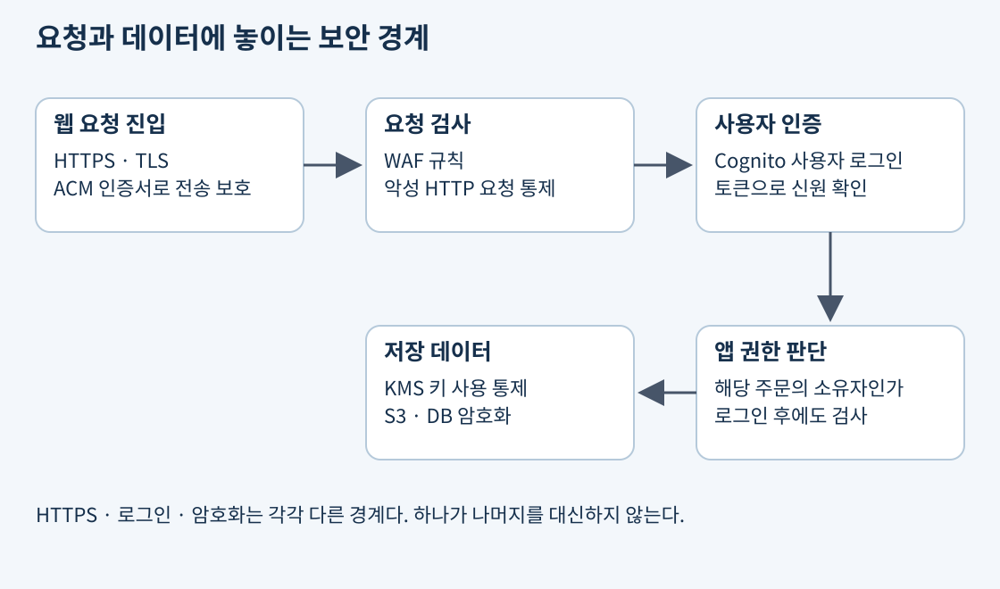
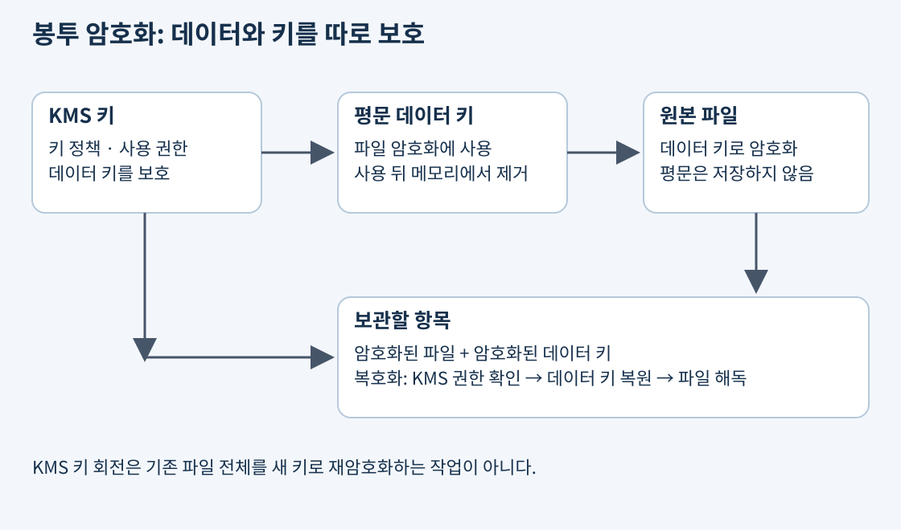
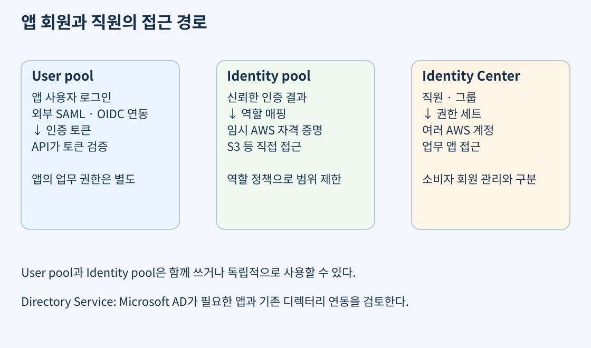
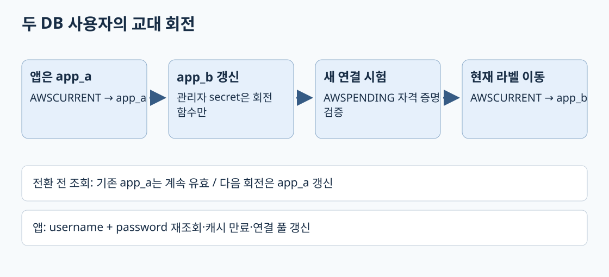
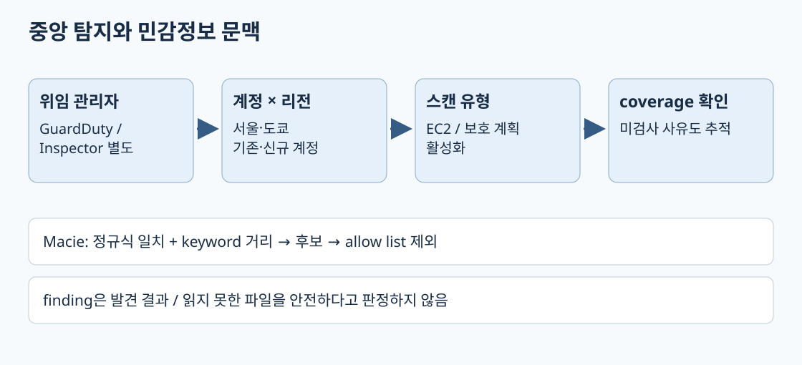

고객이 쇼핑몰에 로그인하고 주문 파일을 올리는 상황에는 여러 보안 문제가 겹친다. 로그인한 사람이 누구인지 확인해야 하고, 그 사람이 해당 주문에 접근할 권한이 있는지 판단해야 한다. 전송 중 도청을 막고 저장된 데이터도 보호해야 한다. 공격성 요청을 걸러내는 일과 이미 발생한 침해 흔적을 조사하는 일도 필요하다.
이 역할들은 서로 대체되지 않는다. HTTPS로 안전하게 전송해도 잘못된 사용자에게 파일을 내려주면 유출이다. 디스크가 암호화되어도 데이터를 읽을 권한을 가진 탈취 계정이 접근하면 복호화된 내용을 얻을 수 있다. 따라서 네트워크·신원·권한·암호화·탐지의 경계를 따로 본다.

출처: AWS 보안 설계 원칙
AWS KMS는 암호화 키를 생성·관리하고 암호화 연산에 대한 접근을 통제하는 관리형 서비스다. S3나 EBS 같은 서비스의 암호화에 통합된다. 대용량 파일 전체를 애플리케이션이 KMS API에 보내 암호화하는 구조로 이해하기보다, 데이터를 암호화하는 데이터 키와 그 키를 보호하는 KMS 키를 나눠 이해한다.
봉투 암호화에서는 데이터 키로 실제 데이터를 암호화하고, 데이터 키를 KMS 키로 암호화한다. 평문 데이터 키는 암호화 작업에 사용한 뒤 메모리에서 제거하며 암호화된 데이터 키를 암호문과 함께 보관한다. 복호화할 때는 권한이 있는 주체가 KMS를 통해 데이터 키를 복호화한 뒤 데이터를 읽는다. 암호화된 데이터 키가 유출되어도 KMS 키 사용 권한 없이 곧바로 평문 키를 얻을 수는 없다.

대칭 암호화는 암호화와 복호화에 같은 비밀 키를 쓰는 방식이다. AWS 서비스의 저장 암호화에서는 대칭 KMS 키가 흔히 쓰인다. 고객 관리형 키는 고객이 키 정책·수명 주기·회전 등을 통제할 때 선택한다. AWS 관리형 키와 AWS 소유 키는 관리 주체와 고객의 제어 범위가 다르다. 단순히 모두 “KMS 암호화”라고 묶으면 공유와 정책 요구를 놓친다.
KMS 키에는 키 정책이 있다. 같은 계정에서 IAM 정책으로 허용하더라도 해당 키 정책이 IAM 사용을 허용하는 구조인지 확인해야 한다. 다른 계정의 역할이 키를 사용할 때는 키 소유 계정의 키 정책과 호출자 계정의 IAM 정책 양쪽 허용이 필요하다. 외부 계정에 모든 키 관리 작업을 위임할 수 있는 것도 아니다. 데이터 리소스 자체의 읽기 권한도 별도다.
예를 들어 B 계정의 분석 역할이 A 계정의 암호화된 S3 파일을 읽으려면 버킷·객체 접근과 KMS 복호화 경로를 모두 통과해야 한다. S3 권한만 추가하거나 KMS 권한만 추가하면 나머지 경계에서 실패할 수 있다. 키를 비활성화하거나 삭제하면 원본 저장소가 멀쩡해도 읽지 못할 수 있으므로 삭제는 데이터 복구 계획과 함께 검토한다.
출처: KMS 키 종류, 키 정책, 교차 계정 키 사용
키 회전은 이후 암호화에 사용할 키 재료를 바꾸는 것이다. 기존 암호문은 옛 키 재료로 복호화할 수 있도록 KMS가 관리한다. 회전을 켰다고 S3의 모든 기존 객체나 DB 백업이 새 키로 다시 암호화되는 것은 아니다. 규정이 “이전 데이터도 다른 키로 재암호화”를 요구한다면 해당 서비스의 복사·재암호화 작업을 따로 계획해야 한다.
회전 지원은 키 유형과 키 재료 출처에 따라 다르다. 모든 KMS 키가 동일한 자동 회전 방식을 지원한다고 가정하지 않는다. 키를 새로 만드는 수동 교체와 기존 키 식별자를 유지하면서 키 재료를 회전하는 방식도 구분한다.
출처: KMS 키 회전 동작과 제한
CloudHSM은 고객 전용 HSM을 사용해 암호화 키와 연산을 통제하는 서비스다. 전용 하드웨어 경계, 특정 암호화 인터페이스나 규정 요구가 있을 때 검토한다. KMS는 AWS 서비스 통합과 관리 편의가 강점이며 CloudHSM은 HSM 사용자·키·클러스터 가용성 등 고객의 운영 책임이 더 크다. “보안이 중요하니 무조건 CloudHSM”이 아니라 전용 HSM이 꼭 필요한 요구인지 확인한다.
DB 비밀번호를 코드에 넣으면 소스와 배포 파일을 통해 퍼질 수 있다. 비밀값을 별도 저장하고 실행 역할로 가져오면 접근 주체와 교체 과정을 통제하기 쉽다. 다만 가져온 값을 로그에 출력하거나 모든 서버에 넓은 읽기 권한을 주면 저장소를 바꾼 효과가 줄어든다.
| 서비스 | 보관·관리 대상 | 선택 조건과 한계 |
|---|---|---|
| Secrets Manager | DB 자격 증명, API 토큰 등 비밀값 | 지원 방식으로 비밀값과 실제 대상의 교체를 연동 |
| Systems Manager Parameter Store | 계층형 설정값과 SecureString | 환경 설정과 암호화 값 저장; DB 자격 증명 자동 교체와 구분 |
| ACM | SSL/TLS 인증서 | 지원 AWS 서비스 연결과 발급·검증·갱신 조건 확인 |
| KMS | 암호화 키와 키 사용 권한 | 비밀번호 저장·교체 워크플로 자체를 대신하지 않음 |
Secrets Manager의 rotation은 저장된 비밀값만 바꾸는 작업이 아니다. 실제 DB나 서비스의 자격 증명과 저장된 값을 일관되게 변경해야 한다. 지원되는 관리형 회전이나 Lambda를 이용한 회전 등 방식은 대상에 따라 달라진다. 애플리케이션의 캐시와 DB 연결이 이전 비밀번호를 계속 사용하면 교체 후에도 장애가 생길 수 있다.
Parameter Store는 /prod/orders/db-endpoint처럼 이름 경로로 설정을 조직하고 IAM으로 접근을 통제한다. SecureString은 KMS 암호화를 사용한다. 파라미터 정책이나 변경 알림이 있다는 사실을 DB 비밀번호를 실제 대상과 자동 교체하는 완성된 회전 기능으로 오해하지 않는다. 계층 경로별 권한도 하위 값의 노출 범위까지 검토한다.
출처: Secrets Manager 회전, Parameter Store
ACM은 HTTPS에 필요한 인증서를 관리한다. 인증서는 서버의 신원을 검증하고 TLS 통신에 사용되지만 사용자의 주문 접근 권한까지 부여하지 않는다. DNS 검증을 사용하면 필요한 검증 레코드를 유지해야 하며, 인증서의 연결·내보내기 여부 등 갱신 자격 조건도 충족해야 한다. 외부에서 가져온 인증서에는 ACM 관리형 자동 갱신을 그대로 기대하지 않는다.
인증서 종류, 발급·사용·내보내기 방식과 Private CA 사용 여부에 따라 비용이 달라질 수 있다. “ACM은 전부 무료” 또는 “인증서는 절대 내보낼 수 없다”처럼 외우지 않는다. 리전별 인증서와 연결 서비스의 요구도 확인한다.
출처: ACM 관리형 갱신 조건, ACM 요금
Cognito는 웹·모바일 앱 사용자 인증과 연동을 지원한다. User pool은 사용자 디렉터리와 로그인 기능을 제공하며 인증된 사용자의 토큰을 발급한다. Identity pool은 신뢰하는 인증 결과 등을 바탕으로 AWS 리소스 접근에 사용할 임시 AWS 자격 증명을 제공한다. 두 기능은 함께 쓸 수도 있고 하나만 쓸 수도 있다.
쇼핑몰 API가 JWT를 검증하고 서버 역할로 S3에 접근한다면 사용자의 브라우저에 AWS 자격 증명을 줄 필요가 없을 수 있다. 반대로 앱이 권한 범위 안에서 직접 S3에 업로드해야 한다면 Identity pool과 역할 매핑을 검토한다. 로그인 성공이 버킷 전체 접근을 뜻하지 않도록 사용자별 경로와 역할 정책을 제한한다.

출처: Cognito User pool과 Identity pool
페더레이션은 외부 신원 공급자가 확인한 신원을 신뢰해 접근을 연결하는 방식이다. SAML과 OIDC는 이런 연동에서 쓰이는 표준이며 로그인·토큰 전달 방식과 지원 서비스가 다르다. 회사 디렉터리가 있다고 그 비밀번호를 앱 DB로 복사할 필요는 없다. Cognito User pool은 지원되는 SAML·OIDC 공급자를 연결할 수 있다.
IAM Identity Center는 직원이 여러 AWS 계정과 업무 애플리케이션에 접근하도록 중앙에서 사용자·그룹과 권한 세트를 관리할 때 사용한다. 소비자 쇼핑몰 회원 가입과 직원의 AWS 콘솔 접근을 같은 요구로 다루지 않는다. AWS Directory Service는 Microsoft AD가 필요한 애플리케이션을 AWS에서 운영하거나 기존 AD와 연결할 때 검토한다. Managed Microsoft AD와 AD Connector는 디렉터리 자체를 제공하는지 기존 디렉터리로 연결하는지 차이가 있다.
출처: Cognito 외부 공급자, IAM Identity Center, Directory Service 선택
| 서비스 | 주로 보는 경계 | 사례 |
|---|---|---|
| AWS WAF | 지원 웹 서비스의 HTTP 요청 | SQL 인젝션 패턴, IP·요청 속도 기반 규칙 |
| AWS Shield | DDoS에 대한 가용성 보호 | 대량 트래픽으로 서비스 자원을 소진하는 공격 |
| AWS Network Firewall | 라우팅된 VPC 네트워크 트래픽 | 상태 기반 검사·침입 방지, 송수신 정책 |
| 보안 그룹 | 리소스 네트워크 허용 규칙 | 앱 포트에 특정 출발지만 허용 |
WAF는 웹 요청의 URI·헤더·본문 등 지원 검사 항목을 규칙으로 평가한다. 지원 리소스에 연결해야 하고 규칙을 구성·조정해야 한다. 정상 요청을 잘못 막는 오탐도 있으므로 관측과 시험이 필요하다. 앱의 업무 권한 검사나 알려지지 않은 모든 공격을 자동으로 대체하지 않는다.
Shield는 DDoS 보호에 초점을 둔다. 기본 보호와 유료 Shield Advanced의 지원·기능 범위가 다르므로 요구에 맞춰 비교한다. WAF와 함께 사용할 수 있으며 두 서비스가 서로 배타적인 선택지는 아니다. 네트워크 공격을 흡수하는 것과 로그인한 사용자의 악성 HTTP 요청을 검사하는 것은 다른 경계다.
Network Firewall은 VPC의 상태 기반 네트워크 검사와 침입 탐지·방지를 제공한다. 검사할 트래픽이 방화벽 엔드포인트를 통과하도록 라우팅해야 한다. 배치만 하고 경로를 우회시키면 검사 효과를 얻지 못한다. AZ별 경로와 반환 트래픽, 처리 비용도 함께 설계한다.
출처: WAF, Shield, Network Firewall
보안 서비스는 발견하는 대상부터 구분한다. 서버에 취약한 패키지가 있다는 사실과 그 서버에서 실제 악성 활동이 관찰됐다는 사실은 다르다. 둘은 함께 대응하되 같은 보고서로 보지 않는다.
| 서비스 | 답하려는 질문 | 사용 예와 한계 |
|---|---|---|
| GuardDuty | 의심스러운 활동이 일어나는가? | 로그·데이터 소스에서 탈취 자격 증명이나 악성 활동 탐지; 모든 트래픽을 직접 차단하는 방화벽은 아님 |
| Inspector | 악용될 취약점이나 노출이 있는가? | 지원 EC2·ECR 이미지·Lambda의 취약점 평가; 발견 뒤 패치·배포는 대응 절차 필요 |
| Macie | S3에 민감정보가 있는가? | 지원 S3 데이터의 민감정보 분류와 위험 발견; 모든 DB 내용을 분류하는 도구로 확대하지 않음 |
| Detective | 이 보안 징후가 어떻게 연결되는가? | 연관 활동과 관계를 조사; 초기 차단 정책을 자동으로 완성하지 않음 |
| Security Hub CSPM | 계정들의 보안 상태와 발견 사항은 어떤가? | 여러 출처의 findings와 보안 기준 점검을 집계; 모든 원천 탐지 서비스를 대체하지 않음 |
출처: GuardDuty, Inspector, Macie, Detective, Security Hub CSPM
Firewall Manager는 여러 계정과 리소스에 WAF·Shield Advanced·Network Firewall 등 지원 보안 정책을 일관되게 적용할 때 사용한다. 새 계정과 리소스가 늘어날 때 정책 누락을 줄이는 중앙 관리 역할이며 자체적으로 모든 종류의 공격을 탐지하는 엔진은 아니다.
AWS Artifact는 AWS의 규정 준수 보고서·인증 자료와 계약을 확인하는 곳이다. 회사의 실제 애플리케이션이 규정을 충족한다는 자동 보증서가 아니다. AWS RAM은 지원 리소스를 다른 계정·OU 등에 공유하며, 예를 들어 중앙 네트워크 리소스를 여러 계정이 함께 이용할 때 검토한다. 공유 가능한 리소스 유형과 권한 범위를 확인해야 하며 계정들의 데이터·권한이 전부 합쳐지는 기능은 아니다.
출처: Firewall Manager, Artifact, AWS RAM
같은 S3 버킷이라도 공개 상품 이미지와 신분증 사본은 보호 기준이 다르다. 먼저 데이터 소유자, 민감도, 허용 사용자, 보관 기간과 삭제 의무를 정한다. 태그와 분류 결과를 정책·감사에 연결하되 태그만 붙였다고 암호화와 접근 통제가 자동 적용된다고 생각하지 않는다.
저장 시 암호화는 저장된 매체·객체를 보호하고, 전송 시 TLS는 통신 구간을 보호한다. 앱에서 TLS를 종료한 뒤 DB까지 평문으로 연결한다면 그 다음 구간은 따로 점검한다. 데이터 상주 요구가 있으면 원본 리전뿐 아니라 복제본·백업·로그·외부 연동 위치도 확인한다. 멀티 리전 복제는 가용성을 높일 수 있지만 허용 국가 밖 복사를 요구하는 규정과 충돌할 수 있다.
백업은 손실 후 복구에 필요하다. S3 Versioning은 객체 변경 시 이전 버전을 남기지만 권한 있는 주체가 영구 버전을 삭제할 가능성까지 막는 불변 보관은 아니다. Object Lock은 보관 기간과 모드 등에 따라 보호된 객체 버전의 영구 삭제를 제한한다. 같은 객체 키에 새 버전을 올리는 것까지 막는 것은 아니다. 삭제 방지 요구라면 버전 관리만으로 충족했다고 판단하지 않는다. 복구하려는 백업도 암호화 키에 접근할 수 있어야 읽을 수 있다.
출처: 데이터 분류, 데이터 보호, S3 Object Lock
신분증 업로드부터 읽기·보관·삭제까지의 경로를 그려본다. Cognito가 확인한 신원과 S3·KMS가 판단하는 권한을 구분하고, ACM이 보호하는 TLS 구간을 표시한다. WAF가 요청을 통과시킨 뒤에도 앱이 확인할 권한을 설명한다. 이어 Inspector의 취약점 발견, GuardDuty의 의심 활동, Macie의 민감정보 발견을 서로 다른 사건으로 설명하고 각각 누구에게 어떤 대응을 요청할지 정리한다.
**회전(rotation)**은 비밀 저장소와 실제 DB의 비밀번호를 함께 바꾸는 과정이다. AWSCURRENT는 앱이 기본 조회하는 현재 버전, AWSPENDING은 검증 중인 새 버전이다. 단일 사용자 방식은 같은 DB 사용자의 비밀번호를 변경한다. DB 변경 뒤 현재 라벨 전환 전까지 기존 비밀번호로 신규 연결하면 실패할 수 있다. 앱의 짧은 캐시·인증 오류 시 재조회·연결 풀 갱신이 필요하며 기존 세션 생존 여부는 DB 동작에 달렸다.
교대 사용자(alternating users) 방식은 동등 권한의 두 DB 사용자를 번갈아 갱신한다. 현재 app_a를 앱이 사용하는 동안 회전 함수는 별도 관리자 secret으로 app_b를 생성 또는 갱신하고 새 비밀번호 접속을 시험한 뒤 AWSCURRENT를 app_b 버전으로 옮긴다. 다음 회전은 반대로 진행한다. 두 사용자가 공통 DB 접근 역할을 상속하면 권한 차이를 줄이지만 테이블 소유권 등 DB별 권한 모델을 확인해야 한다. 관리자 secret은 앱에 주지 않는다. 앱은 연결 생성 시 현재 username과 password를 함께 조회하며 무기한 캐시는 피한다. 사용자 두 명이 있다는 사실만으로 캐시·권한 동기화·회전 실패가 사라지지 않는다.
예를 들어 주문 서비스가 30일 회전 중에도 유효한 신규 연결을 받아야 하고 두 사용자를 허용하면 교대 방식을 검토한다. 개인 관리용 계정처럼 사용자 복제가 부적절하면 단일 방식을 선택하고 실패 창과 재조회 절차를 다룬다. Parameter Store SecureString은 KMS로 설정값을 보호하지만 이 DB 변경·검증·버전 전환 워크플로를 자체 제공하지 않는다.

출처: 회전 전략, 회전 함수 네 단계, 교대 사용자 설정.
**위임 관리자(delegated administrator)**는 Organizations의 관리 계정으로부터 특정 보안 서비스의 멤버 관리 권한을 위임받은 계정이다. GuardDuty는 의심 활동, Inspector는 지원 자원의 취약점을 다루므로 두 서비스를 각각 구성한다. 서울·도쿄의 30개 계정이라면 각 리전의 기존 멤버 활성화·필요 보호 계획/스캔 유형과 신규 계정 자동 활성화를 확인한다. 관리자 지정만으로 모든 리전·모든 스캔이 활성화됐다고 판단하지 않는다. GuardDuty ALL은 기존·신규, NEW는 신규만 대상으로 하며 NONE으로 바꿔도 기존 활성화를 일괄 해제하지 않는다. Inspector의 위임 관리자 방식에서는 기존 멤버의 EC2/ECR/Lambda 유형 활성화와 신규 계정 자동 활성화를 별도로 설정한다. 현재 지원되는 Organizations Inspector 정책을 통한 중앙 적용도 비교할 수 있다. 최종 확인은 계정·리전·스캔 유형별 coverage 상태로 한다.
Macie의 custom data identifier는 정규식에 문맥 조건을 결합한다. 비정형 텍스트에서 CUST-[0-9]{8}에 keyword customer_id, MaximumMatchDistance=20을 주면 customer_id: CUST-12345678은 keyword 끝에서 번호 끝까지 15자이므로 포함된다. order: CUST-12345678은 keyword가 없어 제외된다. 이 거리는 keyword 끝부터 정규식 일치 문자열 끝까지다. 번호 앞의 간격 자체를 20자까지 허용한다는 요구라면 번호 13자도 더해 실제 거리 설정을 조정해야 한다. 공개 테스트 번호 CUST-00000000은 allow list로 제외한다. 문맥 없는 정규식만 쓰면 같은 모양의 공개 주문 예시도 검출된다. 구조화 파일은 컬럼명·동일 필드 등 문맥 규칙이 달라지므로 실제 포맷으로 시험한다. 지원 파일 형식·암호화 접근·저장 클래스·크기 제한 때문에 읽지 못한 객체는 “민감정보 없음”이 아니다. finding은 분류 결과이며 업로드 차단이나 자동 권한 변경이 아니다.

출처: GuardDuty 자동 활성화, Inspector 멤버 스캔, Macie 식별자 조건, 허용 목록, 지원 저장 형식.
정책·오탐 예외·TLS 구간과 불변 보존의 상세 구성은 보안 심화에 연결한다. 본문의 경계·회전·분류는 핵심이고 심화 정책은 구성 판단을 위한 보충이다. 실제 기출 빈도를 뜻하는 구분은 아니다.
공식 자료 확인일: 2026-11-02